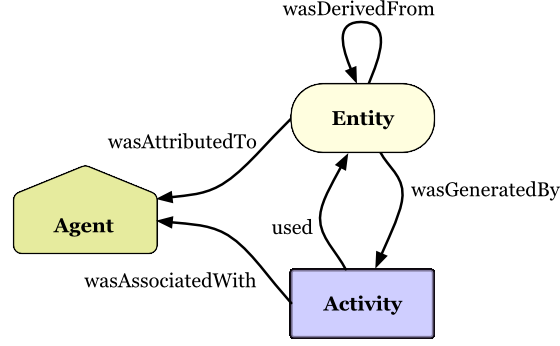

Provenance Ontology (PROV)¶
Table of Contents¶
Graph - Provenance Ontology¶
The PROV graph is depicted in this OWL-generated illustration.
The PROV class hierarchy is depicted in this illustration.
Summary Illustration - Provenance Ontology¶
An overview of PROV :cite:`6045` is depicted in this illustration:
